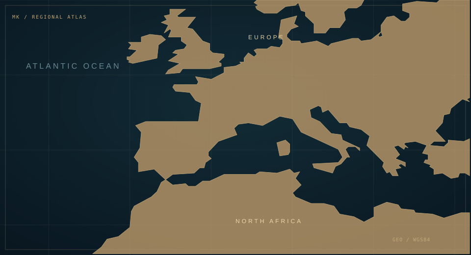

SOFTWARE · AUTOMATION · INFRASTRUCTURESCROLL TO EXPLORE ↓
DIGITAL WORK SINCE2016
WEBSITES & DIGITAL PROJECTS100+
COMPUTING / UNIVERSITYUCLM / ESI
WORKING LANGUAGESAR · EN · FR · ES
01 / SELECTED WORK
Real systems. Work you can inspect.
Public source code and collaborative institutional delivery. The illustrations summarize documented architecture; they are not private application screenshots.
PUBLIC WEBSITE SCREENSHOT
INSTITUTIONAL DELIVERY / TEAM LEADERSHIP
MYCDIC digital environment
Leading digital platform initiatives with MYCDIC and Trendad teams, covering the public website and internal administrative workflows.
Website architectureAutomationOperations
Read the technical approach
Public communication, managed submissions, structured records, verification and correspondence. Internal screens and personal records remain private; responsibilities are shared with the teams.
TrustOps Studio brings together public DNS diagnostics and GitHub repository intelligence. Explore observable security signals, verify sources, and export reports without credentials or invented scores.
SPFDMARCMXDKIMDNS OVER HTTPSGITHUB APIOPENSSFOSV
Free · public DNS and repository data · no account · read-only
TRUSTOPS / DIAGNOSTICSv30.2
DNS
01 / DOMAIN TRUSTSPF + DMARC
02 / REPOSITORYCI + POLICY
03 / OPEN SOURCESCORECARD + OSV
PUBLIC DATA / EXPLAINABLE EVIDENCE↗
03 / FUNCTIONAL ENGINEERING TOOL
Build with evidence. Harden your workflows.
Import a real n8n workflow JSON export, explore its graph, inspect configuration risks, make bounded reliability edits, and rerun the analysis. No server, account or invented results.
Free and entirely browser-local. Imported workflows are not uploaded or executed. Remove credentials before sharing exports.
RELIABILITY / INSPECTORv31.0 · LOCAL
GRAPH → FINDINGS → FIX → RECHECKPRIVATE / BROWSER
02 / INTERACTIVE ENGINEERING LAB
Follow a request through a system.
An interactive browser workstation: edit files, inspect changes, commit local snapshots and run a real stateful delivery pipeline. Nothing reaches your computer or institutional systems.
WHY IT MATTERS
Reliability depends on more than a successful form submission: traceability, recovery and clear outcomes are part of the design.
BROWSER-LOCAL · terminal + syntax-highlighted code editor + executable JS tests + Git-format local commits + SQL/Python runtimes on demand
Your workspace and run history are stored in this browser. Git-style commits are local snapshots, not real Git objects; no shell commands run on your device.
WORKSPACE / ENGINEERING PRACTICE
Build, test, inspect.
Write to a persistent local project. Check real file changes, run scenario-based workflows, and export the session.
CONNECTING STORAGE
EXPLORER
All changes stay on this device and can be exported as JSON.
LOCAL VERSION HISTORYmain · 0 commits
config.jsonSAVED
Editing local file
OPERATIONS 0 JOBS
QUEUED0
DELIVERED0
FAILED0
RETRIES0
RECENT JOBS
EXECUTABLE CHECKS NOT RUN
Run test in the terminal. It will validate your saved configuration and workspace content.
OPTIONAL / PYTHON RUNTIME
Python in the browser
Run your code with Pyodide WebAssembly. The runtime is downloaded on demand and may be unavailable offline. Output reflects actual execution, not predefined messages.
Not loaded
Python results will appear here.
03 / ENGINEERING TOOLKIT
A working toolkit, not a wall of logos.
Select a technology to see what it contributes to a real development or operations workflow.
// selected toolkit
TECHNOLOGY IN PRACTICE
JavaScript
Interfaces, validation, client-side behavior and connected web applications.
AREADevelopment
RELATED WORKRepoVerity · MYCDIC
↗
04 / GLOBAL PERSPECTIVE
Systems are built for people and places.
My work combines technical execution with institutional cooperation and cross-border communication. The locations below describe verifiable work and academic context, not live activity.
WORKING LANGUAGESالعربية / English / Français / Español
SELECTED CONTEXT40.4168° N · 3.7038° W
Madrid
Institutional coordination and the public MYCDIC website.
GEOGRAPHICAL CONTEXT3D INITIALIZING
39°N — 51°N

DRAG TO ROTATE · SCROLL TO ZOOM · SELECT A LOCATION
MadridMYCDIC headquarters
Connection arcs represent conceptual institutional context, not live activity, traffic or travel. Map coordinates are approximate reference locations.
05 / PROFESSIONAL PROFILE
Experience earned by building.
I study Computing at the Escuela Superior de Informática (UCLM ESI), with a focus on AI and automation. Outside the classroom, I work across engineering, technical coordination, Wikimedia and institutional digital visibility.
Inspect public DNS records or GitHub repositories. Results contain observable evidence and explicit coverage limits, never imaginary grades or unverified security claims.
Read-only public requests to GitHub API and optionally OpenSSF Scorecard. OSV queries apply only to exact versions identified from supported dependency manifests. The website cannot verify private settings, secret scanning, hidden vulnerabilities or production security.
Enter a public GitHub repository to begin. No report has been generated.
REPOSITORY EVIDENCE REPORT
—
Absence of a public finding is not proof of security. Automated analysis is limited to accessible public files and APIs; OpenSSF/OSV results may be unavailable, incomplete, stale or rate-limited.
Public DNS queries are sent to DNS-over-HTTPS providers when selected. Repository checks query GitHub API, OpenSSF and optionally OSV. Requests are read-only; third-party services may log queries.
Ready to inspect a public domain.—
◌
Your audit starts with real evidence.
Enter a domain to retrieve current DNS responses. Results are never prefilled with invented grades or sample checks.
LIVE DNS REPORT
—
DNS publication is not a deliverability or cybersecurity certification. SPF count estimates are advisory; DKIM message signatures, alignment and SMTP behavior are not tested.
Inspect a genuine n8n export. The graph, findings and retry editor use the same parsed workflow. Each modification triggers a fresh analysis. Static checks cannot prove runtime behavior.
Drop your n8n workflow JSON here · Max 2 MB · processed only in your browser
Import a workflow to begin.
◈
Your analysis begins with an actual workflow file, or a labeled training example.
Untitled
LOCAL / NOT EXECUTED
NODES0
EDGES0
TRIGGERS0
CRITICAL0
WARNINGS0
ADVISORIES0
02 / WORKFLOW GRAPHSELECT TO INSPECT
Connection graph rendered from imported JSON. No workflow commands or external requests are executed.
OPTIONAL / INCIDENT EVIDENCE
Inspect an actual execution snapshot.
Import a separately exported n8n execution JSON containing resultData.runData. We only display node names, timing and error categories; payloads and stack traces stay hidden. No execution or network connection.
Local · max 2 MB · optional
04 / Evidence-based findings
Privacy & limitations: This static inspector reads JSON in your browser only. It does not validate n8n credentials, run nodes, trace production incidents or certify security. Imported exports may contain sensitive settings; do not share the exported file before reviewing it. A sample is explicitly identified.
ADVANCED ENGINEERING STUDIO / V28
LOCAL GIT OBJECTS · REAL STATE TRANSITIONS · VISUAL OBSERVABILITY
CONNECTING TO STORAGE
WORKSPACE0 files
VERSION HISTORY0 commits
EXECUTABLE TESTSNot run
OPERATIONS0 jobs
src/handler.jsSAVED
CodeMirror · Ctrl / ⌘ + S to save
browser@portfolio:~/workspaceLOCAL OPERATIONS ONLY
WORKFLOW ARCHITECTURE / REAL LOCAL EXECUTION
ENGINEERING STUDIO / V28
Design the flow. Inspect every decision.
Drag a stage to reposition it, select it to inspect configuration, and bypass optional stages. Future jobs execute the selected flow using a snapshot of your saved project files.
6 / 6 stages active
01 / PIPELINE GRAPHDRAG · SELECT · CONFIGURE
Edges follow the enabled execution order. This is a browser-local workflow, not a connected production system.
Select a node or run a scenario to begin.
03 / EXECUTE
Browser-local runs
Creates jobs, saved records, retry events and trace data. No real webhook or email is sent.
Each run retains its initial configuration, request and stage order. Logs contain real event times. Paused runs survive refresh and require a deliberate resume. Failed jobs write a browser-local dead-letter record.
RECORDED JOB TIMINGS
Run a job to create a timing history.
Measured elapsed time from queue entry through completion; not network latency.
JAVASCRIPT TESTS · SANDBOXED EXECUTION
Tests execute code from src/handler.js and tests/handler.test.js inside a restricted, opaque-origin iframe. Change a function to make a test fail, then fix it.
Run tests to see actual results.
REAL SQLITE ENGINE / WEBASSEMBLY
sql.js (SQLite WASM) downloads on first use from an external CDN. If unavailable, a clear error is shown; no simulated SQL results. SQL state is saved in this browser.
Not loaded · requires an internet connection.
REAL PYTHON / PYODIDE WASM
Python runs in a Web Worker using Pyodide downloaded on first use. Results come from code execution; network access is needed to load the runtime.